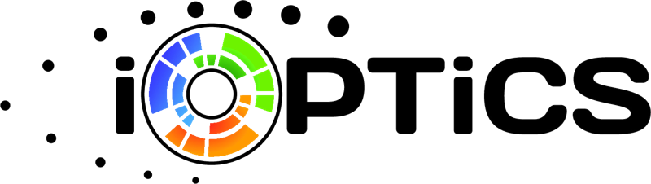
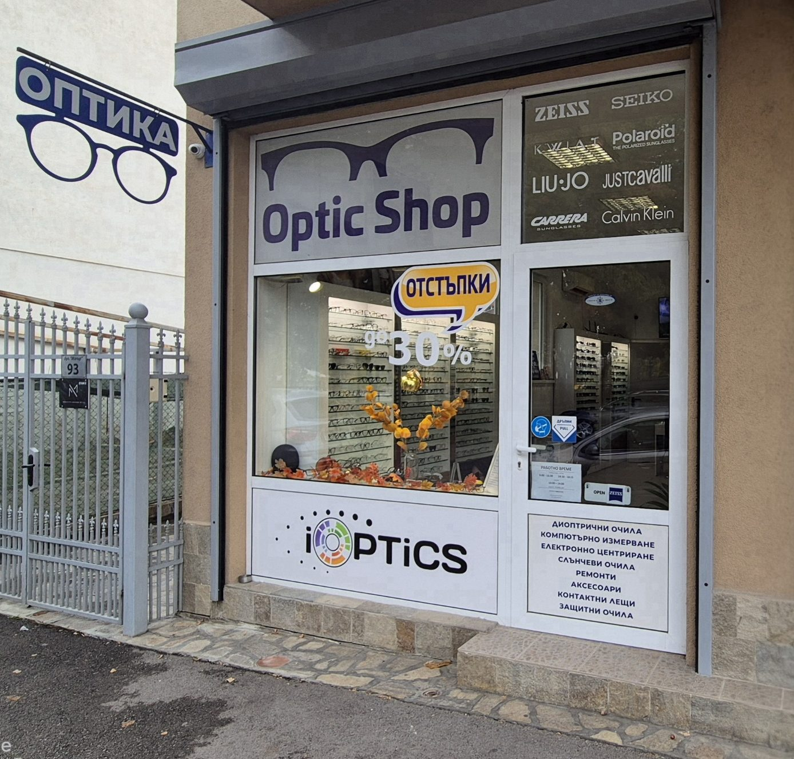

Лещи · Покрития
Покритието решава колко ясно виждате, колко лесно се чистят лещите и колко дълго ще изглеждат като нови.
Отраженията по лещата намаляват контраста и създават ореоли около светлините. Най-силно се усеща вечер.
Илюстрация: шофиране вечер. Без покритие светлините имат ореоли и двойни отражения, а табелата се чете по-трудно.
Повечето съвременни лещи съчетават няколко покрития в едно. Ето какво прави всяко от тях.
Намалява отраженията по повърхността на лещата. Виждате по-ясно, особено вечер, а хората срещу вас виждат очите ви, а не отблясъци.
Подходящо при
Защитава пластмасовата леща от фини драскотини при ежедневно почистване и носене.
Подходящо при
Водата, мазнината и отпечатъците не полепват и се избърсват с едно движение.
Подходящо при
Намалява прахта, която се привлича към лещата.
Подходящо при
Отразява част от синьо-виолетовата светлина от екрани и LED осветление. Много хора усещат по-голям комфорт при дълга работа пред екран.
Подходящо при
Блокира ултравиолетовите лъчи, които се отразяват от гърба на лещата към окото. При слънчевите и фотохромните лещи е задължителна.
Подходящо при
Отговорете на 4 въпроса и ще ви кажем какво препоръчваме.
Цялата леща в един цвят, сив, кафяв или зелен, в различна плътност. Подходящо за слънчеви очила с диоптър.
По-тъмно горе и по-светло долу. Удобно за шофиране, защото таблото се вижда ясно.
Отразява още повече светлина и придава модерен вид. Подходящо за сняг, вода и спорт.
Премахва отблясъците от вода, мокър път и сняг. Препоръчваме я за шофьори и рибари.
Препоръчваме го почти винаги. Лещата без покритие отразява около 8 % от светлината и повече при изтънените лещи. С антирефлекс отраженията падат под 1 %, затова виждате по-ясно и очите се уморяват по-малко.
Разликата е в броя на слоевете, твърдостта и колко лесно се почистват. По-добрите покрития издържат по-дълго без драскотини и отблясъци.
Той намалява част от синьо-виолетовата светлина и много хора усещат по-голям комфорт пред екран. Няма доказателства, че екраните увреждат очите, затова го препоръчваме за комфорт, а не като лечение.
Не. Покритията се нанасят от производителя при изработката на лещата, затова се избират при поръчката на нови лещи.
Почиствайте с вода и препарат за очила, подсушавайте с микрофибър и не оставяйте очилата на горещо, например в колата през лятото или до печката.
ул. Искър 93, Самоков
